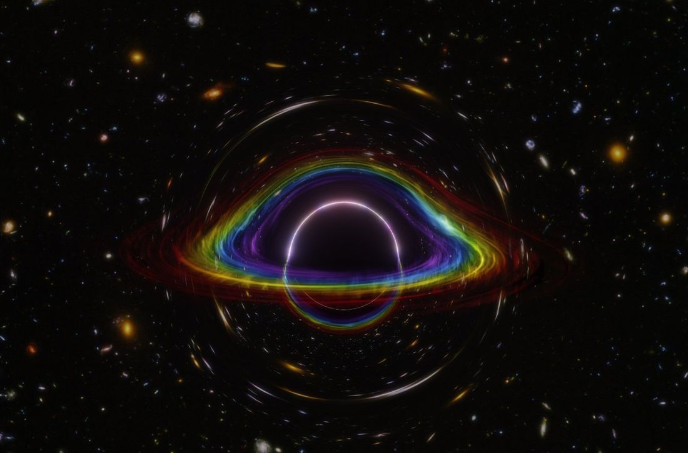

Black holes are where gravity is at its most extreme. The event horizon is a one-way membrane, and whatever happens inside it is hidden from us. The region around it is not: light and gravitational waves cross it on their way to our telescopes and detectors, and carry an imprint of the geometry there.
Almost everything we say about an astrophysical black hole begins by assuming it is the Kerr solution of vacuum general relativity. We assume it because it is the solution we know how to compute with, not because it has been tested where it would matter most, in the strong field just outside the horizon.
I build descriptions that do not assume it, and carry them far enough out to be compared with a measurement.
Research
A recurring idea in the search for quantum gravity is that new physics must appear at or near the Planck scale. String theory, loop quantum gravity and asymptotic safety are among the approaches built on it. Many of them, together with a range of phenomenological models, predict black hole geometries that deviate from the classical solutions in ways that reflect the underlying quantum structure.
One place such deviations would show is the light ring, the unstable circular orbit of photons around the hole. For a given mass, general relativity fixes where it sits, and it sets the edge of the shadow seen in images such as those of the Event Horizon Telescope. A deformed geometry moves the light ring and reshapes the shadow, but reading the geometry back from an image is far from straightforward.
Gravitational waves offer a complementary, and in some respects cleaner, probe. The ringdown of a newly formed black hole returns a short list of complex frequencies. Turning that list into a statement about whether the remnant was Kerr requires a map, from the geometry is deformed, by some unknown physics to the frequencies move, by this much, and the map has to be built without committing in advance to which theory did the deforming.
The difficulty is that a theory-agnostic parametrisation is easy to write down and hard to make mean anything. Write a general deformation of the metric, expand, fit the coefficients, quote bounds: the procedure is standard and much of its output is not well defined, because a large part of the parameter space being fitted corresponds to no consistent spacetime at all.
With Francesco Sannino, Stefan Hohenegger and others I co-developed the Effective Metric Description, which is an attempt to put that on a proper footing. A deformation away from Schwarzschild or Reissner–Nordström is expanded not in a coordinate but in a physical quantity, such as the proper radial distance to the horizon or a curvature invariant like the Ricci or Kretschmann scalar, so that the coefficients describe the geometry itself rather than the chart or the model used to write it down.
The technical content of the framework is a regularity problem, and that is the part I find most worth having. Requiring a deformed geometry to admit a self-consistent near-horizon expansion free of curvature singularities imposes real conditions on the deformation, and several quantum-corrected metrics in active circulation violate them. The framework is constraining rather than descriptive: it removes candidate geometries from circulation. And because the same construction reaches outward (through Padé resummation) to shadows, photon-sphere data and quasi-normal spectra, a geometry that fails a consistency condition does not fail abstractly. It predicts a number an observation can confront.
More recently I have been moving the programme out of the static case. With Marco de Cesare and Carlos Herdeiro I solved the Einstein equations to quadratic order for the backreaction of a decaying massive scalar cloud on a Schwarzschild black hole, keeping the exponential decay of the state rather than treating the cloud as stationary, so that the horizon evolves under the field equations rather than by assumption.
The next questions I want to answer are whether the near-horizon consistency conditions have anything to say about the stability of the quasi-normal spectrum, and what all of this looks like once the geometry is allowed to rotate.
Publications
Talks and seminars
◆ invited seminar · ◇ contributed talk
Elsewhere
Core member since 2026, in the Fundamental Physics and Waveform Working Groups — where deformed-spectrum work either becomes a constraint or does not.
Member of BridgeQG — Bridging High and Low Energies in Search of Quantum Gravity — since 2024. Its remit is the traffic between formal and phenomenological gravity, which is roughly where I live.
Classical and Quantum Gravity, JCAP, European Physical Journal C, Annals of Physics, Physics of the Dark Universe, and the International Journal of Geometric Methods in Modern Physics.
Co-organiser of the BIFROST workshop (Black hole Insights: Navigating the FROntiers of SpaceTime), Odense, 2025 — and the author of its poster, below.
Private tutoring in mathematics and physics at secondary-school and undergraduate level since 2020.

Curriculum vitae
Full CV as PDF · talks and publications have their own tabs above.